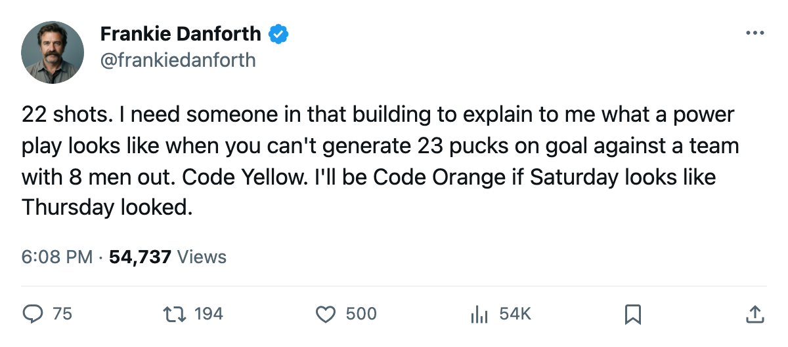
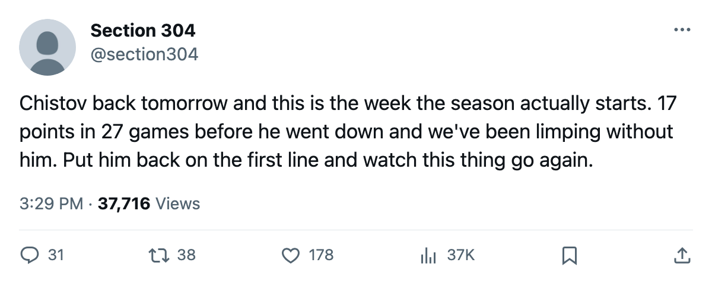

DANFORTH: Code Yellow, 22 shots, and the formula that ran 4 straight wins
The 4-goal pattern held for a month, then broke against New Jersey. Chistov returns tomorrow with the highest form term on the roster.
 Frankie DanforthColumnist · Queen City Telegram
Frankie DanforthColumnist · Queen City Telegram
Code Yellow

 Toronto Maple Leafs managed 1 goal on 22 shots against
Toronto Maple Leafs managed 1 goal on 22 shots against  New Jersey Devils on Thursday. The Devils put 31 on
New Jersey Devils on Thursday. The Devils put 31 on  Roberto Luongo95 and won 3-1 at home. The formula I've been tracking since November broke in the plainest possible way.
Roberto Luongo95 and won 3-1 at home. The formula I've been tracking since November broke in the plainest possible way.
Through 25 games I logged this: Toronto is 6-0 when scoring 4 or more, and 1-3 when it doesn't. In the last 10 games the pattern is even starker. Every win came with 4 goals. Every loss came with 2 or fewer. Four straight wins meant four straight 4-goal nights. Then Thursday happened.
[[widget:panic]]
The 22 shots is the problem. Not the 31 against, not Luongo's workload (though we'll get to that on another page), but the 22. That's the lowest shot total of the season, and it tells you the top 6 couldn't get through the neutral zone.  Mats Sundin92 finished with 18 points in 27 games.
Mats Sundin92 finished with 18 points in 27 games.  Brad Richards87 has 14 in 12.1 minutes. The centre ice that was supposed to carry this team is producing at a pace that means every night is a coin flip against any structured opponent.
Brad Richards87 has 14 in 12.1 minutes. The centre ice that was supposed to carry this team is producing at a pace that means every night is a coin flip against any structured opponent.
Chistov is the fix
 Stanislav Chistov87 returns tomorrow. The Bureau's Development Index has him at +8 form, 87 overall off a base of 78. Chistov scored 10 goals and 17 points in 27 games before the leg went out between November 16 and 17, and he's the second-highest point producer on this roster behind Petr Chlup87 (20 points), so his return gives the coach a real top-6 left wing instead of
Stanislav Chistov87 returns tomorrow. The Bureau's Development Index has him at +8 form, 87 overall off a base of 78. Chistov scored 10 goals and 17 points in 27 games before the leg went out between November 16 and 17, and he's the second-highest point producer on this roster behind Petr Chlup87 (20 points), so his return gives the coach a real top-6 left wing instead of  Jamie Lundmark81 logging 6.2 minutes on the fourth line.
Jamie Lundmark81 logging 6.2 minutes on the fourth line.
The other leaf on this branch: the Northeast standings show Toronto Maple Leafs at 40 points in 27 games,  Boston Bruins at 33 in 25. The lead is real. Two games in hand, a division crown that nobody else has made me worry about all season. I'm not Code Orange. I'm not Code Red. But the NJ game showed me that when the goals don't come in bunches, this roster has no Plan B. It has no grinding 2-1 win in it. When they don't score 4, they lose.
Boston Bruins at 33 in 25. The lead is real. Two games in hand, a division crown that nobody else has made me worry about all season. I'm not Code Orange. I'm not Code Red. But the NJ game showed me that when the goals don't come in bunches, this roster has no Plan B. It has no grinding 2-1 win in it. When they don't score 4, they lose.
Sundin turns 35 next year. Chlup is 19. The gap between those two is where this team lives or dies, and right now 19 is carrying the load. I'll say it again because nobody in this building is listening: I need a second centre who can score behind the 99. Richards is not that man at 12.1 minutes a night. He's not that man at any number of minutes with 5 goals in 27 games.
Saturday brings  Pittsburgh Penguins. Chistov should play. If the formula holds, this is a team.
Pittsburgh Penguins. Chistov should play. If the formula holds, this is a team.

